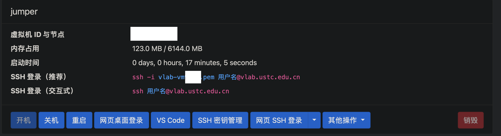
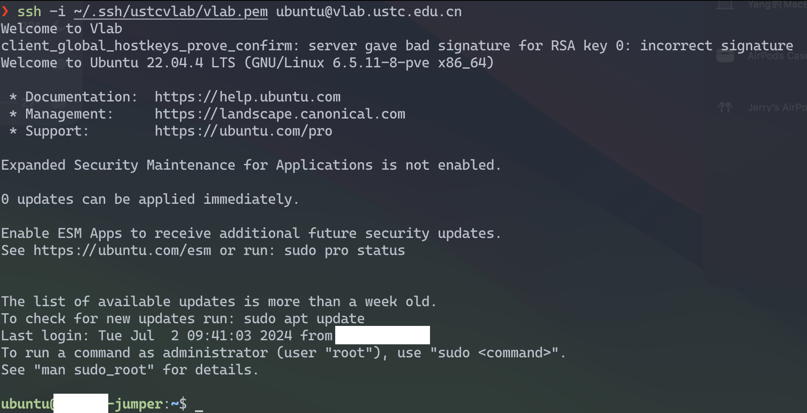
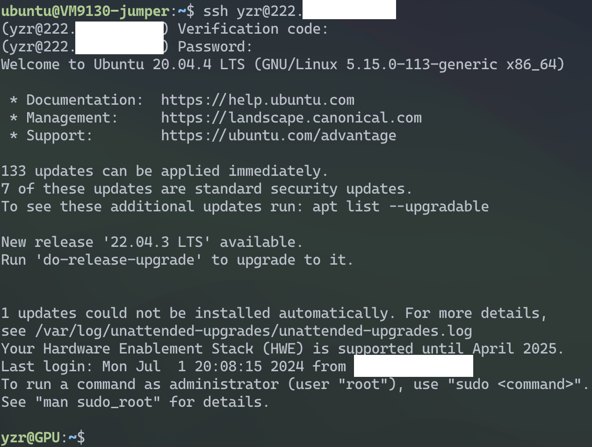
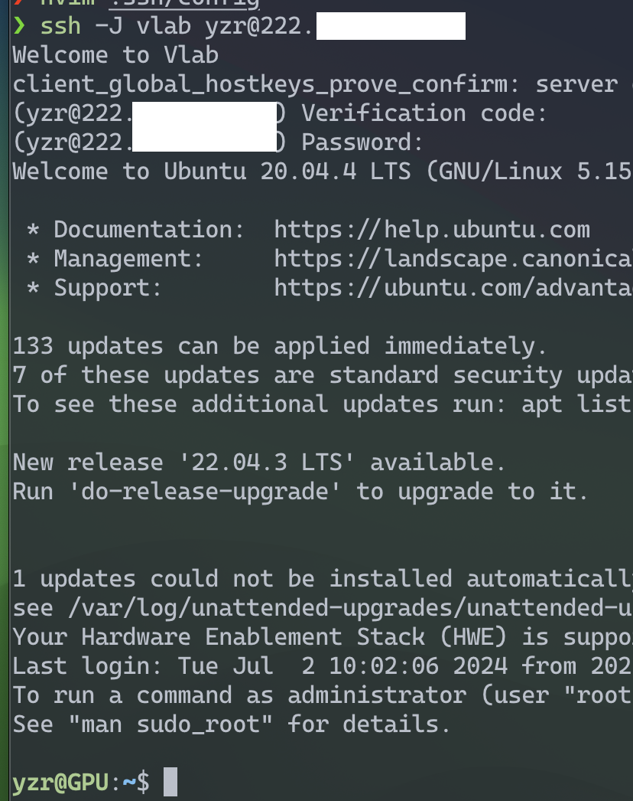

通过 vlab 跳板连接校内服务器
大致的思路是：
- 只能连接外网的机器 L（Local）
- 能同时访问内网和外网的 J （Jump Host）
- 只能连接内网的机器 R（Remote Host）
通过 L <-> J <-> R 建立
L <-> R 的连接。我们的使用场景下 R 就是服务器，L
是你的个人机器，J 可以是任何一个可以同事访问内外网的机器。
在我们这里的主要 ssh 的功能是： 1
2- SSH [J]umping: Connect through a jumphost to a remote server (Multiple jump hops may be specified separated by comma characters):
ssh -J username@jump_host username@remote_host
创建 vlab 虚拟机
在这里创建虚拟机，我使用的是ubuntu镜像。等待创建完还需要开机，结果如下：

本地 ssh 连接 vlab
官方教程 建议使用密钥的方式进行连接

在这个里面已经可以访问到我们的服务器了：

避免每次连接的时候都需要写一长串的 ssh 命令，我们修改
~/.ssh/config: 1
2
3
4
5
6$ cat ~/.ssh/config
...
Host vlab
HostName vlab.ustc.edu.cn
User ubuntu
IdentityFile ~/.ssh/ustcvlab/vlab.pem # 注意修改
直接使用 ssh 登陆
这一部分我们尝试一下 ssh -J 来登陆
根据一开始的提示，我们需要使用 1
ssh -J username@jump_host username@remote_host
因为我们之前配置了
.ssh/config，因此我们只需要将跳板机器的
username@jump_host 替换成对应的 Host
即可（vlab）

当然你也可以直接用下面的命令来连接。 1
$ ssh -i <ident-file> -J ubuntu@vlab.ustc.edu.cn user@gpu